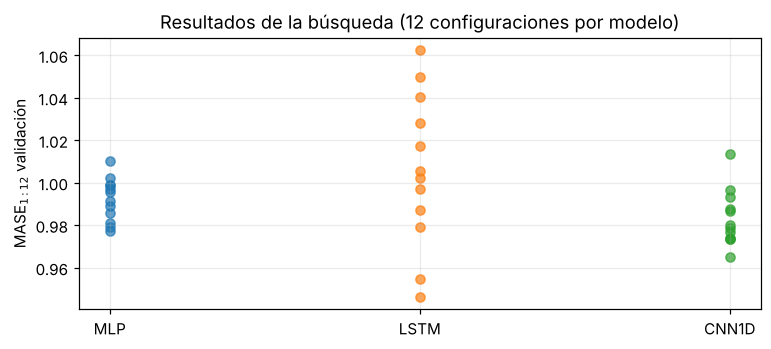

4. Diseño experimental, búsqueda de hiperparámetros y estudio piloto#
%matplotlib inline
import sys, warnings, json
from pathlib import Path
ROOT = Path.cwd()
while not (ROOT / "src").exists(): ROOT = ROOT.parent
sys.path.insert(0, str(ROOT / "src"))
warnings.filterwarnings("ignore")
import numpy as np, pandas as pd, matplotlib.pyplot as plt
from IPython.display import Markdown, display
plt.rcParams.update({"figure.dpi": 110, "axes.grid": True, "grid.alpha": .25, "figure.figsize": (9, 3.4)})
from tsbase import config as C
from tsbase.data import load_energy, Windows, sha256, energy_path
from tsbase.models import SPACES, DEFAULTS
from tsbase import stats as S
search = json.load(open(ROOT / "results/search.json")); pilot = json.load(open(ROOT / "results/pilot.json")); pdf = pd.read_csv(ROOT / "results/pilot.csv")
4.1 Diseño#
Elemento |
Valor |
|---|---|
Entrada |
ventana de 26 semanas de log-precio relativo al último valor, escalada por la desviación estándar de entrenamiento |
Salida |
12 log-retornos acumulados (multi-salida directa) |
Partición |
cronológica 70/15/15; ventanas asignadas por el tiempo de sus etiquetas |
Preprocesamiento |
solo con estadísticos de entrenamiento (escala de entradas y escala de la MASE) |
Entrenamiento |
Adam, MSE, máx. 200 épocas, early stopping (paciencia 20) sobre MSE de validación, CPU, 1 hilo, algoritmos deterministas |
Semillas |
|
Prueba |
congelada (hash en |
Prevención de fuga: (i) las ventanas se asignan por el tiempo de sus etiquetas; (ii) escalas ajustadas solo con entrenamiento; (iii) el módulo de datos lanza PermissionError si se pide la prueba sin allow_test=True; (iv) la búsqueda y el piloto solo usan entrenamiento/validación; (v) no se usan covariables contemporáneas ni texto.
4.2 Búsqueda de hiperparámetros (equidad)#
Misma estrategia (búsqueda aleatoria sin reemplazo), mismo presupuesto (12 configuraciones por modelo), misma semilla de entrenamiento y mismos criterios de selección (MASE\(_{1:12}\) en validación). Los espacios tienen amplitud comparable (5–7 dimensiones categóricas):
rows = []
for m, sp in SPACES.items():
rows.append({"modelo": m, "espacio": "; ".join(f"{k}∈{v}" for k, v in sp.items()), "tamaño del espacio": search[m]["space_size"], "evaluadas": len(search[m]["trials"]), "% explorado": round(100 * len(search[m]["trials"]) / search[m]["space_size"], 1)})
pd.DataFrame(rows).style.hide(axis="index")
| modelo | espacio | tamaño del espacio | evaluadas | % explorado |
|---|---|---|---|---|
| MLP | hidden∈[32, 64, 128]; layers∈[1, 2]; dropout∈[0.0, 0.1, 0.2]; lr∈[0.001, 0.003]; weight_decay∈[0.0, 0.0001]; batch∈[32, 64] | 144 | 12 | 8.300000 |
| LSTM | hidden∈[16, 32, 64]; dropout∈[0.0, 0.1, 0.2]; lr∈[0.001, 0.003]; weight_decay∈[0.0, 0.0001]; batch∈[32, 64]; clip∈[0.5, 1.0] | 144 | 12 | 8.300000 |
| CNN1D | channels∈[16, 32, 64]; kernel∈[3, 5]; convs∈[1, 2]; dropout∈[0.0, 0.1, 0.2]; lr∈[0.001, 0.003]; weight_decay∈[0.0, 0.0001]; batch∈[32, 64] | 288 | 12 | 4.200000 |
fig, ax = plt.subplots(figsize=(8, 3.2))
for i, (m, d) in enumerate(search.items()):
v = [t["val_MASE"] for t in d["trials"]]; ax.scatter([i] * len(v), v, alpha=.7)
ax.set_xticks(range(3)); ax.set_xticklabels(search.keys()); ax.set_ylabel("MASE$_{1:12}$ validación"); ax.set_title("Resultados de la búsqueda (12 configuraciones por modelo)"); plt.show()
pd.DataFrame({m: {**d["best"], "val_MASE (1 semilla)": round(d["best_val_MASE"], 4)} for m, d in search.items()}).T.fillna("—")

| hidden | layers | dropout | lr | weight_decay | batch | val_MASE (1 semilla) | clip | channels | kernel | convs | |
|---|---|---|---|---|---|---|---|---|---|---|---|
| MLP | 128.0 | 1.0 | 0.2 | 0.003 | 0.0001 | 32.0 | 0.9771 | — | — | — | — |
| LSTM | 16.0 | — | 0.1 | 0.001 | 0.0000 | 32.0 | 0.9464 | 0.5 | — | — | — |
| CNN1D | — | — | 0.0 | 0.003 | 0.0001 | 32.0 | 0.9652 | — | 32.0 | 3.0 | 1.0 |
Las configuraciones seleccionadas se fijan y no se vuelven a tocar. Nota: la diferencia entre las mejores configuraciones de la búsqueda se midió con una sola semilla, por lo que parte de la ventaja aparente de un modelo puede ser ruido de semilla (el piloto lo cuantifica).
4.3 Estudio piloto (5 semillas, sobre validación)#
Se entrenan 5 semillas por modelo (semillas 100–104, distintas de la usada en la búsqueda) con la configuración seleccionada.
ps = pdf.pivot(index="seed", columns="model", values="MASE_1:12")
res = pd.DataFrame({"media": ps.mean(), "desv. estándar": ps.std(), "CV": ps.std() / ps.mean()}).round(4); display(res)
ps.round(4)
| media | desv. estándar | CV | |
|---|---|---|---|
| model | |||
| CNN1D | 0.9677 | 0.0136 | 0.0141 |
| LSTM | 0.9784 | 0.0217 | 0.0222 |
| MLP | 0.9787 | 0.0087 | 0.0089 |
| model | CNN1D | LSTM | MLP |
|---|---|---|---|
| seed | |||
| 100 | 0.9687 | 0.9798 | 0.9780 |
| 101 | 0.9722 | 0.9556 | 0.9896 |
| 102 | 0.9811 | 1.0043 | 0.9848 |
| 103 | 0.9718 | 0.9948 | 0.9680 |
| 104 | 0.9448 | 0.9577 | 0.9730 |
Margen δ y tamaño de muestra#
El margen de relevancia práctica fijado a priori es δ = 3 % de reducción relativa de la MASE respecto del mejor modelo base. Con la media del mejor modelo en el piloto, eso equivale a un δ absoluto en unidades de MASE; se calcula \(R\approx\left(\frac{z_{1-\alpha'/2}+z_{1-\beta}}{\delta}\right)^2\hat\sigma_d^2\) con \(\alpha'=0.05/3\) (Bonferroni, 3 comparaciones) y potencia 0.80.
tab = pd.DataFrame(pilot["pairs"]).T
tab["R (α=0.05, m=1)"] = tab.pop("R_m1"); tab["R (Bonferroni m=3)"] = tab.pop("R_holm3"); tab["dif. mín. detectable con R=5 (m=3)"] = tab.pop("mde_R5")
tab["Shapiro-Wilk p (dif. pareadas)"] = pd.Series(pilot["shapiro_p"])
print(f"MASE media del mejor modelo en el piloto: {pilot['best_mean_MASE']:.4f} → δ absoluto = {pilot['delta_abs']:.4f}")
tab.round(4)
MASE media del mejor modelo en el piloto: 0.9677 → δ absoluto = 0.0290
| mean_diff | sigma_d | delta_over_sigma | R (α=0.05, m=1) | R (Bonferroni m=3) | dif. mín. detectable con R=5 (m=3) | Shapiro-Wilk p (dif. pareadas) | |
|---|---|---|---|---|---|---|---|
| CNN1D-LSTM | -0.0107 | 0.0163 | 1.7860 | 2.4607 | 3.2822 | 0.0235 | 0.1051 |
| CNN1D-MLP | -0.0110 | 0.0124 | 2.3399 | 1.4335 | 1.9120 | 0.0180 | 0.9677 |
| LSTM-MLP | -0.0002 | 0.0250 | 1.1633 | 5.8004 | 7.7367 | 0.0361 | 0.7806 |
Rneed = int(np.ceil(max(v["R_holm3"] for v in pilot["pairs"].values())))
print(f"R requerido por el piloto (máximo entre pares, Bonferroni m=3): {Rneed}")
print(f"R mínimo del enunciado (5; 6 si se usa Wilcoxon): 6 → R definitivo = max(10 declarado a priori, {Rneed}, 6) = {max(10, Rneed, 6)}")
R requerido por el piloto (máximo entre pares, Bonferroni m=3): 8
R mínimo del enunciado (5; 6 si se usa Wilcoxon): 6 → R definitivo = max(10 declarado a priori, 8, 6) = 10
Lectura. Con 5 semillas la diferencia mínima detectable es ≈0.018 (CNN1D–MLP), ≈0.024 (CNN1D–LSTM) y ≈0.036 (LSTM–MLP) de MASE, frente a δ ≈ 0.029: para el par LSTM–MLP (el más ruidoso) no se alcanza la potencia con 5 semillas. Por eso la ejecución definitiva se amplía a 10 semillas (declarado en el preregistro) — lo que supera el R requerido por el piloto y el mínimo de 6 para Wilcoxon. Se verifica la normalidad de las diferencias (Shapiro–Wilk) en el Cap. 6.
Registro: el preregistro v1 (PREREGISTRO.md) está fechado antes de la búsqueda y del piloto; el piloto se ejecutó sobre validación y no consultó la prueba.